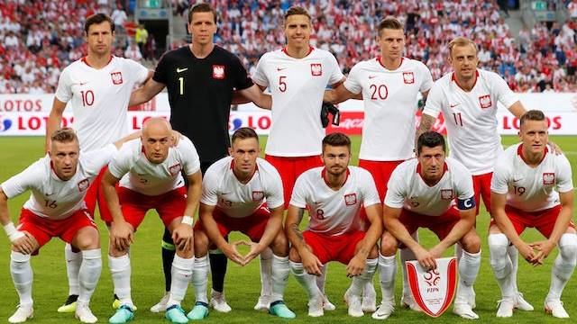

COPAS QUE JÁ PARTICIPOU:
A Seleção de Portugal participou de sete edições de Copa do Mundo. Em 2022 Fará sua 8° participação que será no Catar/Qatar

PREMIAÇÕES QUE JÁ ALCANÇOU
3º lugar na Copa do Mundo de 1966.
NOME DO TÉCNICO:
Fernando Santos
PRINCIPAIS JOGADORES
Cristiano Ronaldo
Jota
Guedes
Tabela de jogos
| Data/Hora | Estádio | Adversário |
|---|---|---|
| 24 nov 2022 / 19h00 | Estádio 974 (Estádio Ras Abu Aboud) | Gana |
| 28 nov 2022 / 22h00 | Estádio Nacional Lusail | Uruguai |
| 2 dez 2022 / 18h00 | Estádio da Cidade da Educação | Coreia do Sul |